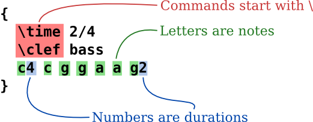
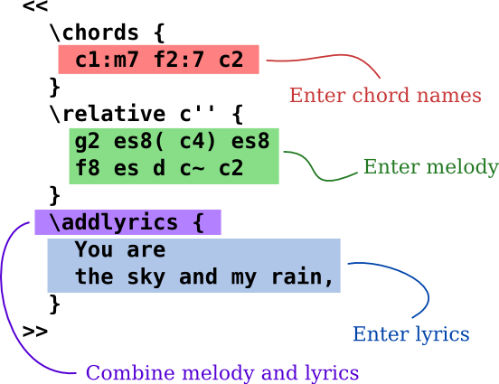
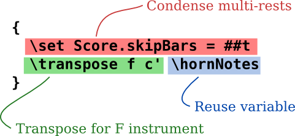

文本输入
“编译” 音乐

(click to enlarge)
LilyPond is a compiled system: it is run on a text file describing the music. The resulting output is viewed on-screen or printed. In some ways, LilyPond is more similar to a programming language than graphical score editing software.
You do not write music by dragging notes from a graphical toolbar and placing them on a dynamically refreshing score; you write music by typing text. This text is interpreted (or “compiled”) by LilyPond, which produces beautifully engraved sheet music.
People accustomed to graphical user interfaces might need to learn a new way of working, but the results are definitely worth it!
注意：We present a quick overview of our text input – it’s not as complicated as it sounds! Don’t worry about understanding every detail in these examples; our beginner documentation covers everything at a much more gradual pace.
就像 A B C 一样简单
Notes are encoded with letters and numbers. Special commands are entered with backslashes.

Alterations are made with different names: add -is for
sharp, and -es for flat (these are Dutch note names, other
languages are available). LilyPond figures out where to put
accidentals.


流行音乐
Put chords and lyrics together to get a lead sheet:

配器部分
The input file contains the notes of piece of music. Score and parts can be made from a single input file, so that changing a note always affects the score and parts. To be able to include the same music in multiple places, the music is assigned to a “variable” (a name).

This variable is then used in a single part (here transposed, with condensed rests spanning several measures):

The same variable is used in the full score (here in concert pitch):


初学者的文档
We realize that many users find this way of entering music a bit odd. For this reason, we have written extensive documentation to help new users, beginning with 学习. The Learning Manual is the best place to start, as many questions are answered before they come up!
Please read the Learning Manual before complaining about bugs! New users occasionally believe that LilyPond is not working correctly, when in fact it is working precisely as designed.
More in-depth information is available in 手册.
更简单的编辑环境

(click to enlarge)
LilyPond is primarily concerned with producing top-quality engraved sheet music; creating a Graphical User Interface (GUI) would distract us from this goal. However, there are other projects aimed at making it easier to create LilyPond input files.
Some editing environments include syntax highlighting, automatic command completion, and pre-made templates. Other programs actually provide a GUI which allows direct manipulation of a graphical score. For more information, see 编辑更简单.
其他语言：English, català, česky, deutsch, español, français, magyar, italiano, 日本語, nederlands。
About automatic language selection.